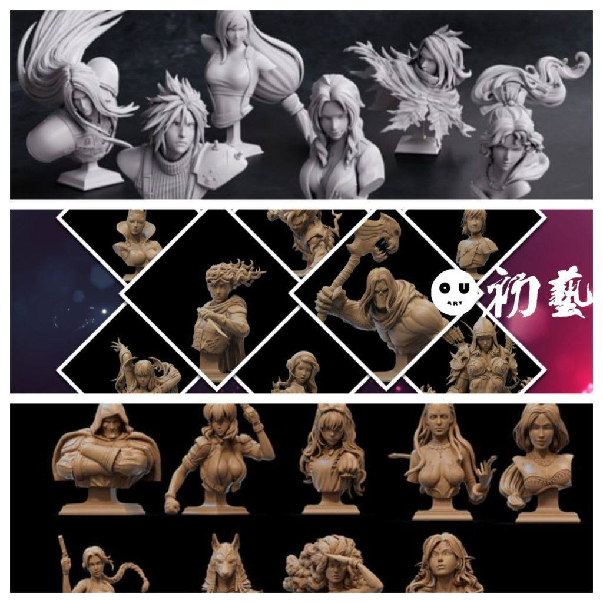
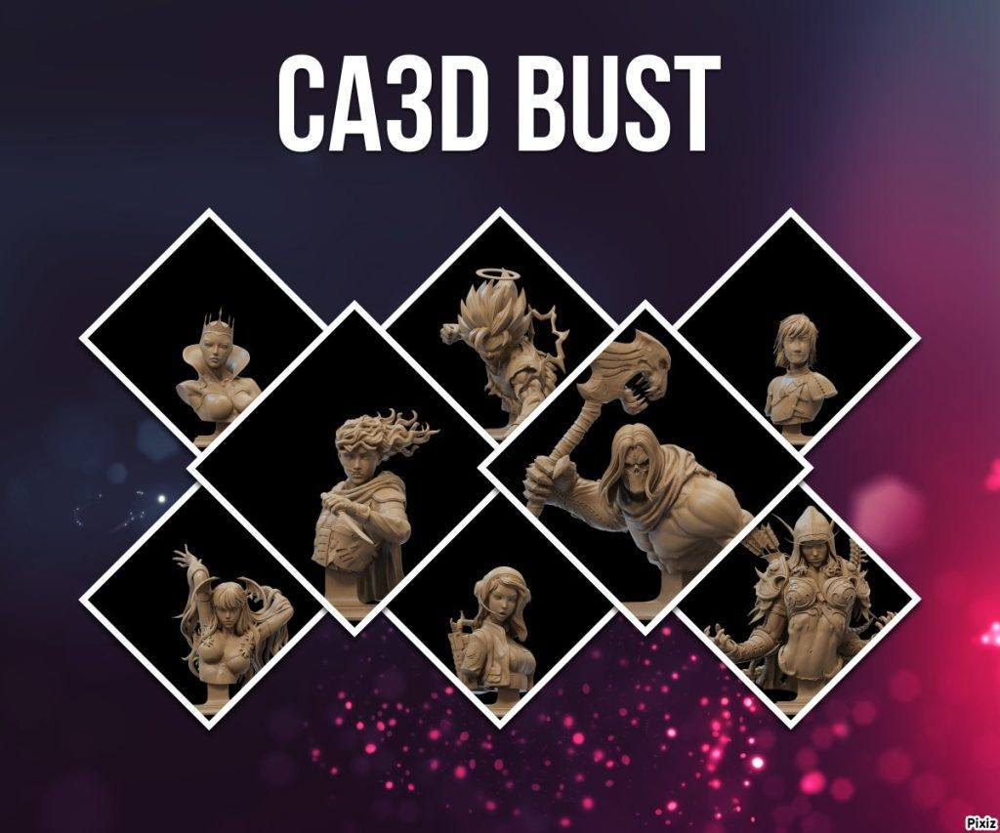
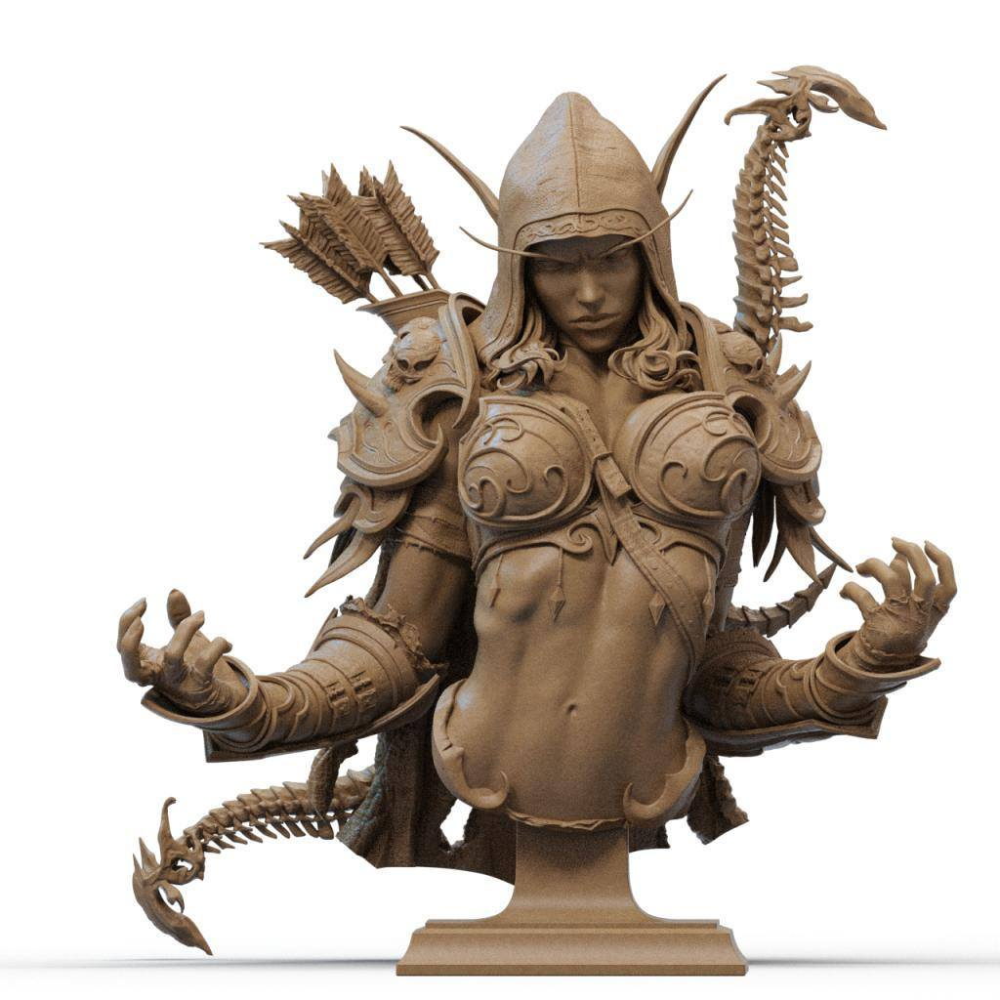
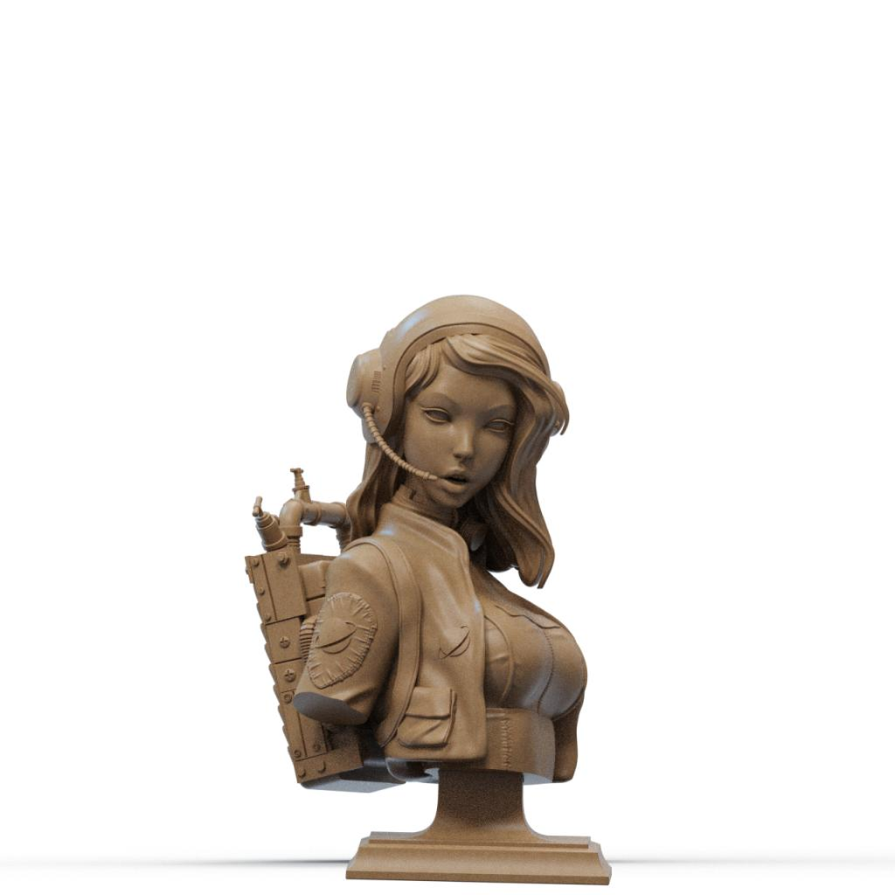
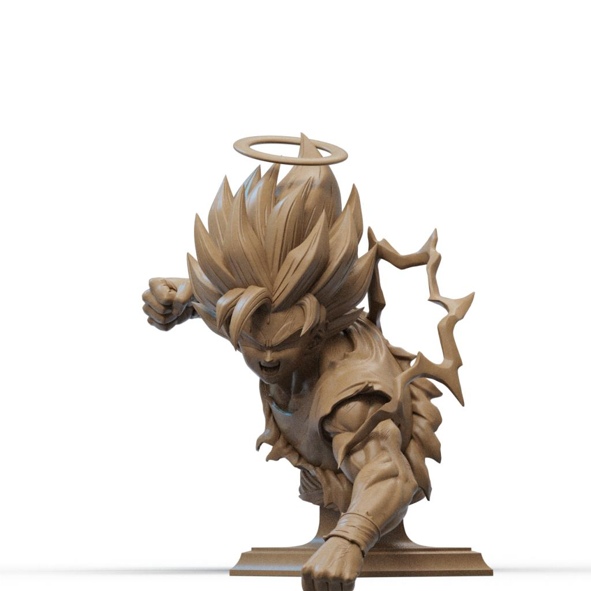
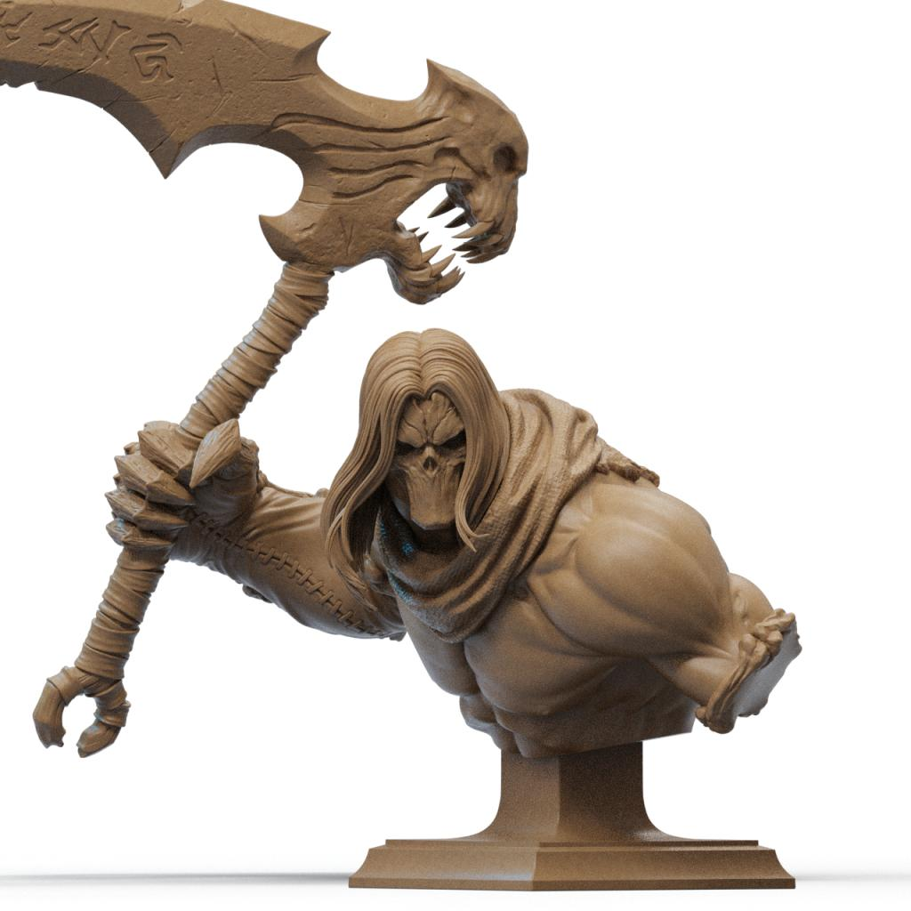
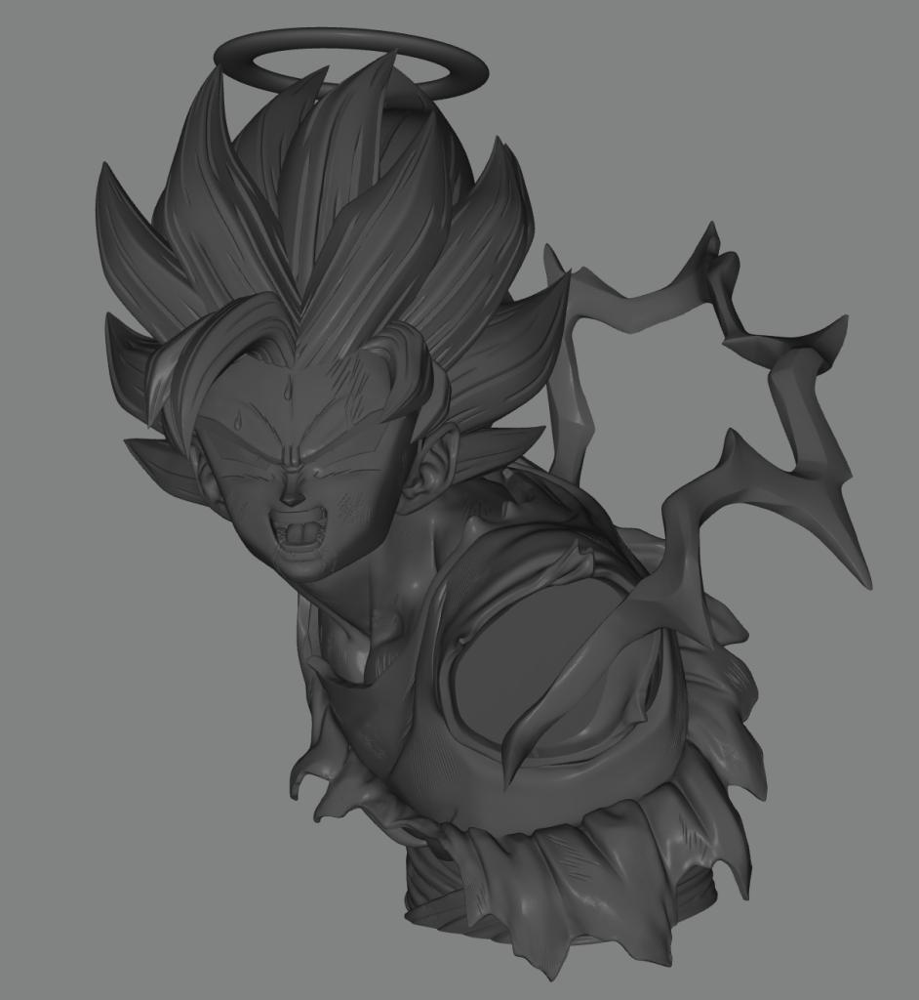
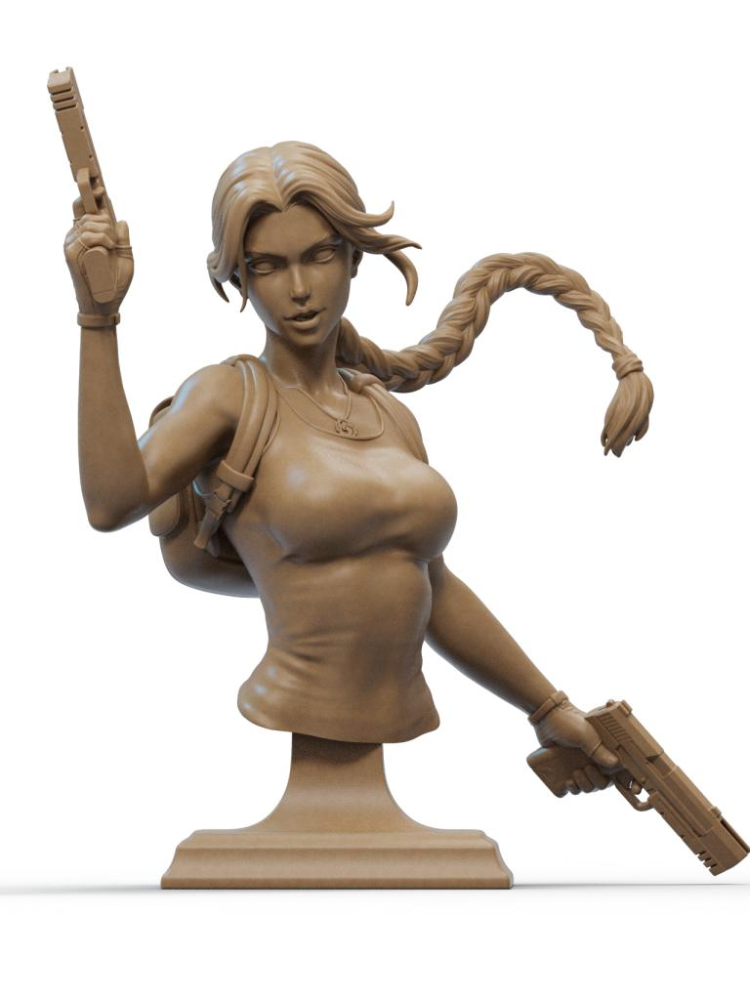
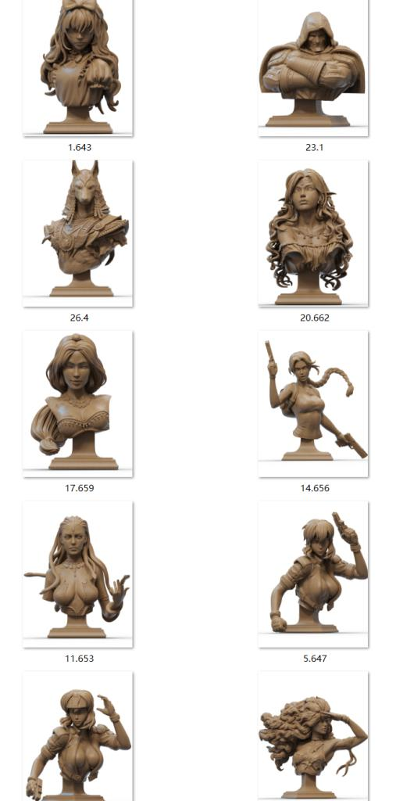
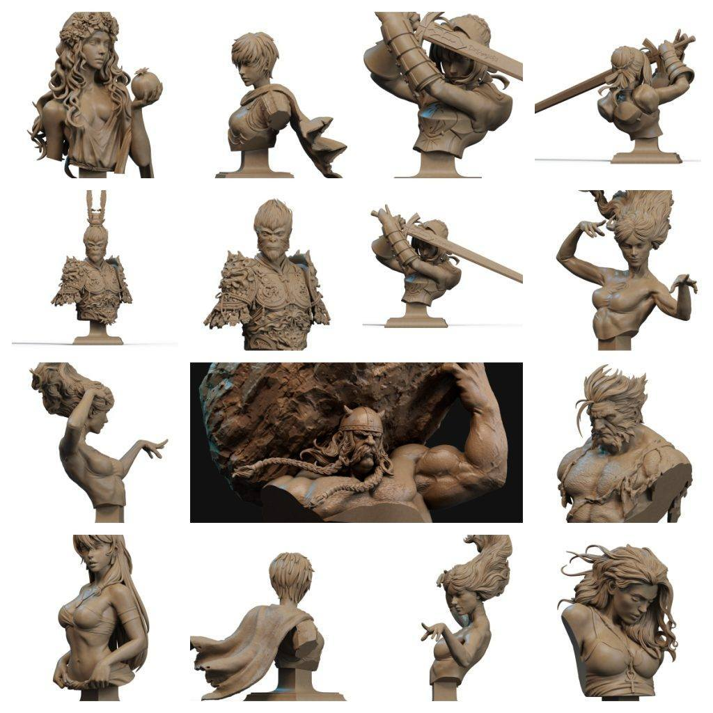

胸像专帖|持续更新
提取码
blxf

胸像专题分享帖。
1.最终幻想7，nomnom出品很不错的一套，几个人气角色都有，精度很好。
链接：https://pan.baidu.com/s/1JKc43365avIaJU8ojSX3og
提取码：blxf

2.ac3d工作室的胸像两套，有很多全身像给大家分享过，精度和造型都非常不错，艺术感拉满。需要提一下的是，如果打印1：6的一体胸像，需要较大尺寸的平台，而且可能会断料，还需要自动供料或者关注一下料是不是够用的问题，而且因为重量，所以这类大型大块的光固化支撑很重要。
第一组：莫妮卡、狗空等。
链接：https://pan.baidu.com/s/1KgJ4CxIQDbHWYCe5Ygcitg
提取码：quer












第二组：毁灭博士、劳拉等。
链接：https://pan.baidu.com/s/1JrwN4xJDBs2yTUwgwG4Fhg
提取码：e1pr



第三组 大圣 金刚狼 珀耳塞福涅 卡思嘉等
https://pan.baidu.com/s/1WwMiiH1_kjbT-gwW0P6-AQ 提取码: mxhi


以上内容仅供个人使用（非商用）
ONLY for PERSONAL (NON-COMMERCIAL) use.
加群获得更多免费模型！